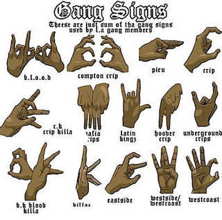
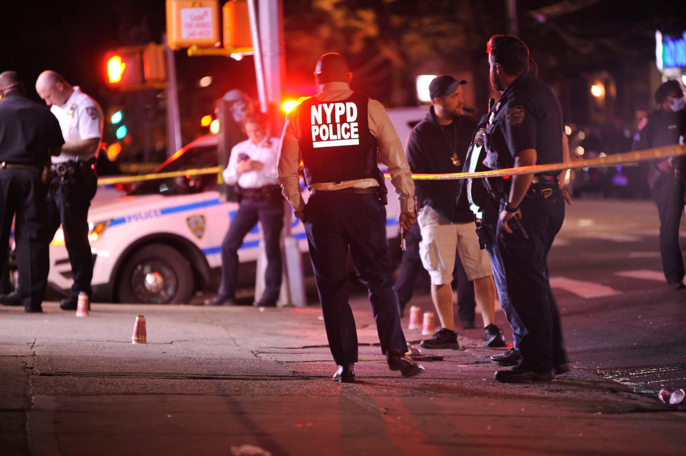

f you raise the age, and you lower what we call the consequences for bad behavior, then you’re going to get an influx of bad behavior because there’s just no accountability for it,” squad commander Capt. James Whitlock said. “So that’s exactly what we’re seeing right now.” And the numbers bear that out. This year, there have been 219 shooting victims in the Bronx — an astonishing 40.4% increase from the 156 victims in 2017, before the Raise the Age Law passed, NYPD data show. Shootings also increased in the NYPD’s Brooklyn North Precinct, which contains the borough’s most crime-ridden precincts. The number of people shot there jumped 22.3% from 103 in 2017 — to 126 in 2023. In Manhattan North, which also sees a high level of gun violence, the number of gunshot victims increased by 50.9% from 55 in 2017 to 83 in 2023, the data show.
 
One of the Bronx Violent Crime Squad’s investigations culminated in the federal indictment of the gang Sev Side and the arrest of drill rapper Kay Flock, 20, who has earned an estimated $1 million for his music. Drill rap, a violent sub-genre that’s frequently tied to street gangs, is often flagged as the motive behind shootings when members taunt each other. The February indictment charged Kay Flock — who was born Kevin Perez and rose to fame in 2020 with his hit single “Shake It” — with conspiracy, murder, and assault with a deadly weapon. He was also charged with the gang-related murder of Hwascar Hernandez, who was shot to death on December 16, 2021 in the Hamilton Heights section of Upper Manhattan. The indictment tied Perez and and fellow gang members to a shocking string of seven shootings in the Bronx that terrorized residents between June 2020 and February 2022.